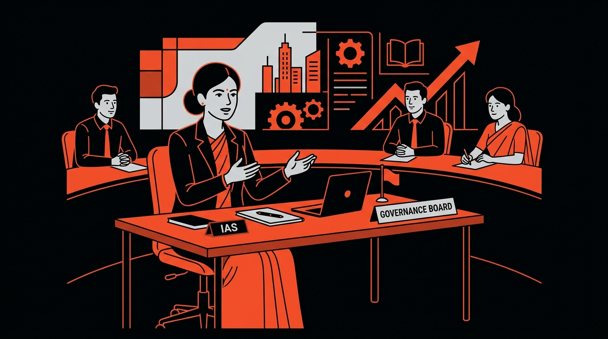

A Career That Gives You the Opportunity to Lead, Serve and Create Impact
Choosing a career is one of the most important decisions you will make. Today, students have more career options than ever before — technology, management, finance, law, medicine, entrepreneurship and many more. Yet, if you are looking for a career that combines leadership, responsibility, intellectual growth, public service and long-term impact, Civil Services can offer a distinctive career path.

Through the UPSC Civil Services Examination, you can enter some of India's most significant public institutions and take up responsibilities that directly contribute to governance and national development.
"Because Some Careers Give You a Job. Civil Services Gives You Responsibility."
A Civil Servant works on issues that directly affect people's lives. From education and healthcare to infrastructure, taxation, agriculture, law and order, rural development, environment and disaster management, government officers work across a wide range of areas.
Analyze the 14 core reasons to choose Civil Services. Filter by subcategories to focus on specific themes.
Work where your decisions directly impact people's lives. Imagine orchestrating programmes improving district-wide education, coordinating crucial disaster relief, or implementing national-scale policies for millions.
Leadership is at the core. You don't just follow blueprints. As officers progress, they command massive teams, public institutions, policy implementation, and navigate unpredictable crises with incomplete information.
Every day brings a different administrative test: improving public healthcare delivery, boosting crop resilience for farmers, structuring clean infrastructure, or balancing environmental protection with fast urban growth.
Avoid monotonous routines. Throughout your service life, transition between field administration, central ministries, regulatory bodies, public sectors, and key international assignments representing India.
UPSC opens pathways to the Indian Administrative Service (IAS), Indian Police Service (IPS), Indian Foreign Service (IFS) for diplomacy, and the Indian Revenue Service (IRS) for economic integrity.
A career of continuous adaptation. As global realities shift, officers study and navigate complex modern challenges like artificial intelligence, climate change, changing demographics, and urban development.
Balancing competing priorities, scarce resources, and urgent crises prepares you to execute strategies objectively under immense social pressure. You don't just research problems; you resolve them.
Unparalleled geographic and cultural exposure. Serve in remote rural blocks, border terrains, aspirational districts, industrial complexes, tribal regions, and metropolitan cities.
Enjoy structured career progressions where your scope of authority scales directly with experience, shifting from local projects to overseeing national departments and programmes.
Governance requires collaboration. Coordinate with local administration units, scientific consultants, security agencies, NGOs, corporate leaders, and the citizens themselves.
Bridge policy-making and ground execution: Walk through the complete process of studying a societal problem, building a tactical response, executing it, and measuring local impact.
Cultivate lifelong competencies: analytical synthesis of complex topics, articulate writing and briefings, structured self-discipline, and deep geopolitical awareness.
Look beyond basic desk jobs. Elevate your daily professional labor to align with a greater mission—contributing directly to the progress and upliftment of Indian society.
While social recognition is high, the true value of civil services lies in its daily responsibility, the policy administration challenge, and structural public service.
Explore the major administrative service branches that you can enter through the UPSC CSE.
Administration & Governance
The IAS is the premier administrative civil service of India. IAS officers manage local governance, direct central developmental projects, and draft policies.
Security, Law & Order
The IPS commands law enforcement, criminal investigation, intelligence structures, and internal security across India.
Diplomacy & Global Relations
IFS officers serve in Embassies, High Commissions, and the Ministry of External Affairs, managing global treaties and diplomacy.
Financial Administration & Enforcement
IRS officers protect national treasury boundaries, collect taxes, reform fiscal frameworks, and investigate economic offenses.
Specialized Administration
Recruits for key administrative portfolios including audit services, corporate law enforcement, and defense estate administration.
Compare the core attributes of both paths to identify what matches your temperament.
| Aspect | Civil Services | Conventional Career |
|---|---|---|
| Focus | Public-facing responsibilities | Often organisation-focused |
| Scope | Work across multiple sectors | Usually specialised |
| Assignments | Diverse postings and assignments | Structured around one industry |
| Objectives | Policy and implementation exposure | Usually business/functional objectives |
| Impact | Public impact | Organisational/customer impact |
| Leadership | Administrative leadership | Functional/organisational leadership |
| Knowledge Base | Broad knowledge requirements | Often deeper specialisation |
Take this interactive alignment quiz to gauge if your goals align with the realities of Civil Services.
UPSC requires deep commitment, and the exam is extremely competitive. Answering these 7 questions objectively will help evaluate your compatibility.
Over a million candidates compete for limited vacancies. Hard work is mandatory, but selection is never guaranteed.
No shortcut replaces 12–18 months of intensive, consistent daily study.
Governance brings high responsibility, complex trade-offs, and public exposure.
Not always glamorous. Assignments can involve difficult locations and long hours.
UPSC should not be chosen because of social prestige, peer preparation, or expectation of an easy career. It requires deep, lasting resilience.
Over a million candidates compete for limited vacancies. Statistically challenging odds require a high tolerance for uncertainty.
Preparation is a marathon. No shortcuts replace 12-18 months of disciplined daily effort.
Selection is not guaranteed by hard work alone. Maintain backup career alternatives to keep your career resilient.
Civil services involve public exposure, complex ethical calls, and political accountability.
Expect demanding assignments in rural areas, emergency calls, and challenging conditions.
Don't select civil services because of external trends—choose it because the responsibility, problems, and community impacts fit your core values.
Ready to evaluate your compatibility or talk to a mentor?